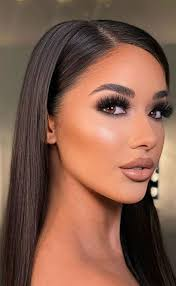

Віковий макіяж - це макіяж, який допомагає зменшити зовнішні ознаки старіння. Це може включати в себе використання різних косметичних засобів, таких як коректори, пудри, рум’яна, тіні для повік, туш для вій та помада для губ.
Особливості макіяжу очей
Віковий макіяж робить акцент на очі. Губи залишаються в тіні. Помада природних неяскравих тонів, трохи блиску (тільки по центру нижньої губи) – це те, що потрібно. Яскравий декор на губах тільки підкреслить вік. Після 40 років очі випромінюють особливий світ, володіють притягальною силою, роблять жінку чарівною. Засмучують лише мішки і синяки під очима, які в такому віці з’являються вже у багатьох дам.